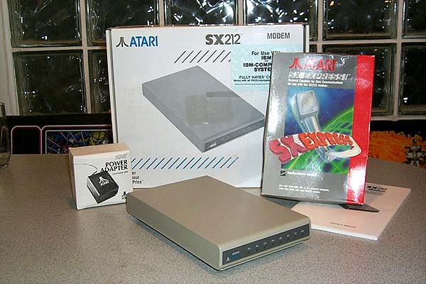

The Atari SX212 Modem. This was the first Atari peripheral to ever "Bridge the Gap" between the Atari XE series computer systems and the Atari ST Series computer systems. There had always been a rivalry and a great deal of friction between the two Atari computer camps. While the Atari XE users represented a long standing Atari computer community dating back to 1979 with the introduction of the Atari 400/800 computers, the Atari ST users represented the "New Atari" and were Atari's newest computers moving forward from 1985.
Atari 400/800 and XL/XE series computer users always felt like the "forgotten children" and were constantly voicing complaints that Atari was only producing newer computer peripherals for its ST series computers. Atari's answer to them came in the form of a new product that would not only work with the Atari ST series computers through a standard serial port (which Atari also advertised that the modem could be used with any IBM compatible computer) but it also worked directly with any Atari 400/800, XL/XE computer through their SIO bus (Serial I/O Bus) connectors.
The Atari SX212 Modems did not come with any software or cables, so those needed to be purchased seperately. Atari ST users had a multitude of choices when it came to telecommunications software for using this new 300/1200 baud modem. The device was Hayes "AT" command set compatible (although Hayes is no longer in business, its legacy lives on since its "AT" command set has become the worldwide command set for use in almost all modems to date) and allowed the use of almost all industry standard communications software.
Atari
XE users could use the modem with several public domain "Rverter" device
compatible terminal programs (Rverter being the device driver needed to
talk to the SX212 modem through the SIO bus) and Atari had itself prepared
a new program called "SX-EXPRESS" which was a version of Keith Ledbetter's
Express Terminal program (Keith was renowned in the Atari telecommunications
circles for his high quality line of terminal software and Bulletin Board
System software). However this program never made it
into Atari retail channels and was instead found topping off dumpsters
behind the Walsh Avenue Atari warehouse several years ago.
Companies such as B&C Computervisions
and Best Electronics were
able to purchase many copies of these programs and now have made them available
to Atari 400/800, XL/XE computer users.